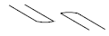
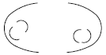
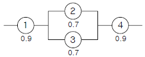
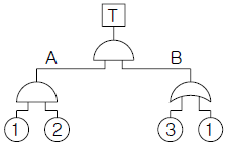
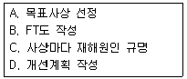

건설안전산업기사 (2012-05-20 기출문제)
1과목: 산업안전관리론
1. 강의계획에서 주제를 학습시킬 범위와 내용의 정도를 무엇이라 하는가?
- 학습목적
- 학습목표
- 학습정도
- 학습성과
(정답률: 58%)

2. 다음 중 안전태도 교육의 기본 과정에 있어 마지막 단계로 가장 적절한 것은?
- 권장한다.
- 모범을 보인다.
- 이해시킨다.
- 청취한다.
(정답률: 51%)
3. 군화의 법칙(群花의 法則)을 그림으로 나타낸 것으로 다음중 폐합의 요인에 해당하는 것은?
- ● ○ ● ○ ● ○
- ○ ○ ○ ○ ○ ○ ○ ○


(정답률: 58%)
4. 연평균 근로자 150명이 근무하는 어느 사업장에 1년간 5명의 사상자가 발생했다. 이 사업장의 연천인율은 약 얼마인가?
- 22.20
- 33.33
- 40.00
- 45.22
(정답률: 77%)
5. 작업지시 기법에 있어 작업 포인트에 대한 지시 및 확인 사항이 아닌 것은?
- weather
- when
- where
- what
(정답률: 72%)
6. 맥그리거(Mcgregor)의 X이론과 Y이론 중 Y이론에 해당되는 것은?
- 인간은 서로 믿을 수 없다.
- 인간은 태어나서부터 약하다.
- 인간은 정신적 욕구를 우선시 한다.
- 인간은 통제에 의한 관리를 받고자 한다.
(정답률: 69%)
7. 다음 중 관료주의에 대한 설명으로 틀린 것은?
- 의사결정에는 작업자의 참여가 필수적이다.
- 인간을 조직내의 한 구성원으로만 취급한다.
- 개인의 성장이나 자아실현의 기회가 주어지지 않는다.
- 사회적 여건이나 기술의 변화에 신속하게 대응하기 어렵다.
(정답률: 66%)
8. 다음 중 인간의식의 레벨(level)에 관한 설명으로 틀린것은?
- 24시간의 생리적 리듬의 계곡에서 tension level은 낮에는 높고 밤에는 낮다.
- 24시간의 생리적 리듬의 계곡에서 tension level은 낮에는 낮고 밤에는 높다.
- 피로시의 tension level은 저하정도가 크지 않다.
- 졸았을 때는 의식상실의 시기로 tension level은 0이다.
(정답률: 70%)
9. 다음 중 안전점검의 직접적 목적과 관계가 먼 것은?
- 결함이나 불안전 조건의 제거
- 합리적인 생산관리
- 기계설비의 본래 성능 유지
- 인간 생활의 복지 향상
(정답률: 63%)
10. 산업안전보건법상 사업 내 안전⋅보건교육 중 채용시의 교육 내용에 해당하지 않는 것은? (단, 산업안전보건법 및 일반관리에 관한 사항은 제외 한다.)
- 사고 발생시 긴급조치에 관한 사항
- 유해⋅위험 작업환경 예방에 관한 사항
- 산업보건 및 직업병 예방에 관한 사항
- 기계⋅기구의 위험성과 작업의 순서 및 동선에 관한사항
(정답률: 46%)
11. 안전모의 일반구조에 있어 안전모를 머리모형에 장착하였을 때 모체내면의 최고점과 머리모형 최고점과의 수직거리의 기준으로 옳은 것은?
- 20mm 이상 40mm 이하
- 20mm 이상 50mm 미만
- 25mm 이상 50mm 미만
- 25mm 이상 55mm 미만
(정답률: 47%)
12. 다음 중 무재해운동 추진 3요소가 아닌 것은?
- 최고 경영자의 경영자세
- 재해 상황 분석 및 해결
- 직장 소집단의 자주활동 활성화
- 관리감독자에 의한 안전보건의 추진
(정답률: 58%)
13. 재해는 크게 4가지 방법으로 분류하고 있는데 다음 중 분류방법에 해당되지 않는 것은?
- 통계적 분류
- 상해 종류에 의한 분류
- 관리적 분류
- 재해 형태별 분류
(정답률: 58%)
14. 안전교육 계획 수립시 고려하여야 할 사항과 관계가 가장 먼 것은?
- 필요한 정보를 수집한다.
- 현장의 의견을 충분히 반영한다.
- 안전교육 시행 체계와의 관련을 고려한다.
- 법 규정에 의한 교육에 한정한다.
(정답률: 74%)
15. 산업안전보건법상 안전관리자의 업무에 해당하는 것은?
- 해당 작업과 관련된 기계⋅기구 또는 설비의 안전⋅보건 점검 및 이상 유무의 확인
- 소속된 근로자의 작업복⋅보호구 및 방호장치의 점검과 그 착용⋅사용에 관한 교육⋅지도
- 사업장 순회점검⋅지도 및 조치의 건의
- 해당 작업의 작업장 정리⋅정돈 및 통로확보에 대한 확인⋅감독
(정답률: 51%)
16. 다음의 사고발생 기초원인 중 심리적 요인에 해당하는 것은?
- 작업 중 졸려서 주의력이 떨어졌다.
- 조명이 어두워 정신집중이 안되었다.
- 작업 공간이 협소하여 압박감을 느꼈다.
- 적성에 안 맞는 작업이어서 재미가 없었다.
(정답률: 46%)
17. 산업안전보건법상 안전⋅보건표지의 종류 중 “방독마스크 착용”은 무슨 표지에 해당하는가?
- 경고표지
- 지시표지
- 금지표지
- 안내표지
(정답률: 77%)
18. 다음 중 사고예방 대책의 기본원리를 단계적으로 나열한 것은?
- 조직 → 사실의 발견 → 평가분석 → 시정책의 적용→ 시정책의 선정
- 조직 → 사실의 발견 → 평가분석 → 시정책의 선정→ 시정책의 적용
- 사실의 발견 → 조직 → 평가분석 → 시정책의 적용→ 시정책의 선정
- 사실의 발견 → 조직 → 평가분석 → 시정책의 선정→ 시정책의 적용
(정답률: 44%)
19. 다음 중 기계적 위험에서 위험의 종류와 사고의 형태를 올바르게 연결한 것은?(오류 신고가 접수된 문제입니다. 반드시 정답과 해설을 확인하시기 바랍니다.)
- 접촉적 위험 - 충돌
- 물리적 위험 - 협착
- 작업 방법적 위험 - 전도
- 구조적 위험 - 이상온도 노출
(정답률: 31%)
20. 다음 중 교육의 3요소에 해당되지 않는 것은?
- 교육의 주체
- 교육의 객체
- 교육결과의 평가
- 교육의 매개체
(정답률: 78%)
2과목: 인간공학 및 시스템안전공학
21. 다음 중 진동이 인간성능에 끼치는 일반적인 영향이 아닌 것은?
- 진동은 진폭에 반비례하여 시력이 손상된다.
- 진동은 진폭에 비례하여 추적 능력이 손상된다.
- 정확한 근육 조절을 요하는 작업은 진동에 의해 저하 된다.
- 주로 중앙 신경 처리에 관한 임무는 진동의 영향을 덜 받는다.
(정답률: 55%)
22. 다음 중 인터페이스(계면)를 설계할 때 감성적인 부문을 고려하지 않으면 나타나는 결과는 무엇인가?
- 육체적 압박
- 정신적 압박
- 진부감(陳腐感)
- 편리감
(정답률: 61%)
23. 스웨인(Swain)의 인적오류(혹은 휴먼에러) 분류 방법에의할 때, 자동차 운전 중 습관적으로 손을 창문 밖으로 내어 놓았다가 다쳤다면 다음 중 이때 운전자가 행한 에러의 종류로 옳은 것은?
- 실수(slip)
- 작위 오류(commission error)
- 불필요한 수행 오류(extraneous error)
- 누락 오류(omission error)
(정답률: 73%)
24. FT도에서 사용되는 기호 중 입력현상의 반대현상이 출력되는 게이트는?
- AND 게이트
- 부정 게이트
- OR 게이트
- 억제 게이트
(정답률: 66%)
25. 다음과 같은 시스템의 신뢰도는 약 얼마인가?

- 0.5152
- 0.6267
- 0.7371
- 0.8483
(정답률: 60%)
26. 다음 중 사업장에서 인간공학 적용 분야와 가장 거리가 먼 것은?
- 작업환경 개선
- 장비 및 공구의 설계
- 재해 및 질병예방
- 신뢰성 설계
(정답률: 51%)
27. [그림]의 결함수에서 최소 컷셋(Minimal Cut Sets)과 신뢰도를 올바르게 나타낸 것은?(단, 각각의 부품 고장률은 0.01 이다)

- (1, 3)
(1, 2) , R(t) = 96.99% - (1, 3)
(1, 2, 3) , R(t) = 97.99% - (1, 2, 3) , R(t) = 98.99%
- (1, 2) , R(t) = 99.99%
(정답률: 45%)
28. 다음 중 절대적으로 식별 가능한 청각차원의 수준의 수가 가장 적은 것은?
- 강도
- 진동수
- 지속시간
- 음의 방향
(정답률: 44%)
29. 다음 중 지침이 고정되어 있고 눈금이 움직이는 형태의 정량적 표시장치는?
- 정목동침형 표시장치
- 정침동목형 표시장치
- 계수형 표시장치
- 점멸형 표시장치
(정답률: 54%)
30. 다음 중 보험으로 위험조정을 하는 방법을 무엇이라 하는가?
- 전가
- 보류
- 위험감축
- 위험회피
(정답률: 47%)
31. 다음 중 조작자와 제어버튼 사이의 거리, 조작에 필요한 힘 등을 정할 때 가장 일반적으로 적용되는 인체측정자료 응용원칙은?
- 평균치 설계원칙
- 최대치 설계원칙
- 최소치 설계원칙
- 조절식 설계원칙
(정답률: 58%)
32. 다음 중 FTA에 의한 재해사례연구의 순서를 올바르게 나열한 것은?

- A → B → C → D
- A → C → B → D
- B → C → A → D
- B → A → C → D
(정답률: 64%)
33. 다음 중 작업장이 조명 수준에 대한 설명으로 가장 적절한 것은?
- 작업환경의 추천 광도비는 5 : 1 정도이다.
- 천장은 80 ~ 90% 정도의 반사율을 가지도록 한다.
- 작업영역에 따라 휘도의 차이를 크게 한다.
- 실내표면에 반사율은 천장에서 바닥의 순으로 증가시킨다.
(정답률: 52%)
34. 다음 중 안전성 평가에서 위험관리의 사명으로 가장 적절한 것은?
- 잠재위험이 인식
- 손해에 대한 자금 융통
- 안전과 건강관리
- 안전공학
(정답률: 38%)
35. 다음 중 조종장치의 종류에 있어 연속적인 조절에 가장 적합한 형태는?
- 토글 스위치(Toggle switch)
- 푸시 버튼(Push button)
- 로터리 스위치(Rotary switch)
- 레버(Lever)
(정답률: 60%)
36. 다음 중 보전효과 측정을 위해 사용하는 설비고장 강도율의 식으로 옳은 것은?
- 설비고장 정지시간 / 설비가동시간
- 설비고장건수 / 설비가동시간
- 총 수리시간 / 설비가동시간
- 부하시간 / 설비가동시간
(정답률: 61%)
37. 작업원 2인이 중복하여 작업하는 공정에서 작업자의 신뢰도는 0.85로 동일하며, 작업 중 50%는 작업자 1인이 수행하고 나머지 50%는 중복 작업한다면 이 공정의 인간 신뢰도는 약 얼마인가?
- 0.6694
- 0.7225
- 0.9138
- 0.9888
(정답률: 27%)
38. 다음 중 한 장소에 앉아서 수행하는 작업활동에 있어서의 작업에 사용하는 공간을 무엇이라 하는가?
- 작업공간 포락면
- 정상작업 포락면
- 작업공간 파악한계
- 정상작업 파악한계
(정답률: 53%)
39. 다음 중 바닥의 추천 반사율로 가장 적당한 것은?
- 0 ~ 20%
- 20 ~ 40%
- 40 ~ 60%
- 60 ~ 80%
(정답률: 48%)
40. 심장 박동주기 동안 심근의 전기적 신호를 피부에 부착한 전극들로부터 측정하는 것으로 심장이 수축과 확장을 할때 일어나는 전기적 변동을 기록한 것은?
- 뇌전도계
- 심전도계
- 근전도계
- 안전도계
(정답률: 77%)
3과목: 건설시공학
41. 콘크리트 타설시 물과 다른 재료와의 비중 차이로 콘크리트 표면에 물과 함께 유리석회 유기불순물 등이 떠오르는 현상을 무엇이라 하는가?
- 컨시스턴시
- 블리딩
- 레이턴스
- 워커빌리티
(정답률: 72%)
42. 지하 흙막이 공법 중 중앙부에서 주변부로 지하구조물이 2단계로 시공되어 이음부처리에 불리하고 공사기간이 길어질 수 있는 공법은?
- Strut공법
- 앵커공법
- 역타공법
- 아일랜드 공법
(정답률: 60%)
43. 콘크리트의 슬럼프를 측정할 때 다짐봉으로 모두 몇 번을 다져야 하는가?
- 30회
- 45회
- 60회
- 75회
(정답률: 71%)
44. 철골공사에서 산소아세틸렌 불꽃을 이용하여 강재의 표면에 홈을 따내는 방법은?
- Gas gouging
- Blow hole
- Flux
- Weaving
(정답률: 78%)
45. 다음 직접기초 지정과 관계가 없는 것은?
- 제물치장
- 모래
- 버림콘크리트
- 잡석
(정답률: 55%)
46. 지상에서 구조체를 미리 축조하여 침하시킨 기초는?
- 독립기초
- 온통기초
- 복합기초
- 잠함기초
(정답률: 75%)
47. 수산화석회는 시간이 경과와 함께 콘크리트의 표면으로부터 공기 중의 탄산가스의 영향을 받아서 서서히 탄산석회로 변화하여 알칼리성을 상실하는데 이와 같은 현상을 무엇이라 하는가?
- 알칼리 골재 반응
- 중성화 현상
- 동결융해 현상
- 염해 현상
(정답률: 68%)
48. 사질지반에 널말뚝을 박고 배수하면서 기초파기를 행할 때, 널말뚝 흙파기 저면의 지하수가 용출하여 모래지반의 지지력이 상실되는 현상을 무엇이라 하는가?
- 틱소트로피(thixotropy)
- 오픈컷(open cut)
- 히빙(heaving)
- 보일링(boiling)
(정답률: 64%)
49. 기성콘크리트 말뚝에 대한 설명으로 옳지 않은 것은?
- 공장에서 미리 만들어진 말뚝을 구입하여 사용하는 방식이다.
- 말뚝간격은 2.5d 이상 또는 75cm 중 큰 값을 택한다.
- 말뚝이음 부위에 대한 신뢰성이 매우 우수하다.
- 시공과정상의 항타로 인하여 자재균열의 우려가 높다.
(정답률: 54%)
50. 각종 시방서에 대한 설명 중 옳지 않은 것은?
- 자료시방서 : 재료나 자료의 제조업자가 생산제품에 대해 작성한 시방서
- 성능시방서 : 구조물의 요소나 전체에 대해 필요한 성능만을 명시해 놓은 시방서
- 특기시방서 : 특정공사별로 건설공사 시공에 필요한 사항을 규정한 시방서
- 개략시방서 : 설계자가 발주자에 대해 설계초기단계에 설명용으로 제출하는 시방서로서, 기본설계도면이 작성된 단계에서 사용되는 재료나 공법의 개요에 관해 작성한 시방서
(정답률: 55%)
51. 건설공사 원가 구성체계 중 직접공사비에 포함되지 않는 것은?
- 자재비
- 일반관리비
- 외주비
- 노무비
(정답률: 74%)
52. 철골공사에서 용접 결함이 아닌 것은?
- 크랙
- 언더컷
- 오버랩
- 스캘럽
(정답률: 64%)
53. 점토에서 분사현상(Quick Sand)이 잘 일어나지 않는 직접적이 이유는?
- 흙의 공극이 크기 때문
- 점토 입자의 비중이 크기 때문
- 입자가 너무 작기 때문
- 점착력이 있기 때문
(정답률: 72%)
54. 건축식전 중 철골조와 목조건축에서는 지붕 대들보를 올릴 때 행하는 의식이며, 철근콘크리트조에서는 최상층의 거푸집 혹은 철근배근 시 또는 콘크리트를 타설한 후 행하는 식은?
- 상량식(上梁式)
- 착공식(着工式)
- 정초식(定礎式)
- 준공식(竣工式)
(정답률: 69%)
55. 다음 중 고장력 볼트접합에 대한 설명으로 옳지 않은 것은?
- 현장에서의 시공설비가 간편하다.
- 접합부재 상호간의 마찰력에 의하여 응력이 전달된다.
- 불량개소의 수정이 용이하지 않다.
- 작업시 화재의 위험이 적다.
(정답률: 69%)
56. 벽식 프리캐스트 철근콘크리트조를 시공하는 공법으로 중층의 공동주택에 폭넓게 채용되는 PC공법은?
- WPC공법
- HPC공법
- RPC공법
- Half PC공법
(정답률: 60%)
57. 지상에서 일정 두께의 폭과 길이로 대지를 굴착하고 지반안정액으로 공벽의 붕괴를 방지하면서 철근콘크리트벽을 만들어 이를 가설 흙막이벽 또는 본 구조물의 옹벽으로 사용하는 공법은?
- 슬러리월공법
- 어스앵커공법
- 엄지말뚝공법
- 시트파일공법
(정답률: 67%)
58. 콘크리트 재료적 성질에 기인하는 콘크리트 균열의 원인이 아닌 것은?
- 알칼리 골재반응
- 콘크리트의 중성화
- 시멘트의 수화열
- 혼화재료의 불균일한 분산
(정답률: 54%)
59. 표토붕괴를 방지하기 위하여 스탠드 파이프를 박고 그 이하는 케이싱을 사용하지 않고 회전식 버킷을 이용하여 굴삭하는 공법은?
- 어스드릴공법
- 어스오거공법
- 베노토공법
- 이코스공법
(정답률: 53%)
60. 프리스트레스트 콘크리트를 프리텐션방식으로 프리스트레싱할 때 콘크리트 압축강도는 최소 얼마 이상이어야 하는가?
- 15MPa
- 20MPa
- 30MPa
- 50MPa
(정답률: 62%)
4과목: 건설재료학
61. 고온으로 가열하여 소정의 시간동안 유지한 후에 냉수, 온수 또는 기름에 담가 냉각하는 처리로 강도 및 경도, 내마모성의 증진을 목적으로 실시하는 강의 열처리법은?
- 불림(Normalizing)
- 풀림(Annealing)
- 담금질(Quenching)
- 뜨임(Tempering)
(정답률: 71%)
62. 다음 시멘트 중 댐 단면이 큰 구조물에 적용하기 어려운 것은?
- 조강포틀랜드 시멘트
- 중용열포틀랜드 시멘트
- 고로시멘트
- 플라이애쉬 시멘트
(정답률: 52%)
63. 유리면에 부식액의 방호막을 붙이고 이 막을 모양에 맞게 오려내고 그 부분에 유리부식액을 발라 소요 모양으로 만들어 장식용으로 사용하는 유리는?
- 샌드 브라스트 유리
- 에칭 유리
- 매직 유리
- 스팬드럴 유리
(정답률: 68%)
64. 유리섬유보강 콘크리트(GFRC)의 설명으로 옳지 않은 것은?
- 고강도이기 때문에 경량화가 가능하다.
- 시멘트모르타르 또는 시멘트페이스트에 보강재로 내알칼리성 유리섬유를 넣어 만든다.
- 유리섬유의 혼입율은 10 ~ 20% 정도이다.
- 패널은 마감을 겸한 반영구적 거푸집으로도 사용될 수 있다.
(정답률: 40%)
65. 어떤 목재의 건조 전 질량이 200g, 건조 후 전건질량이 150g 일 때, 이 목재의 함수율은?
- 10%
- 25%
- 33.3%
- 66.7%
(정답률: 67%)
66. 목재 또는 기타 식물질을 절삭 또는 파쇄하여 소편으로 하여 충분히 건조시킨 후 합성수지 접착제와 같은 유기질의 접착제를 첨가하여 열압제판한 것은?
- 연질 섬유판
- 단판 적층재
- 플로어링 보드
- 파티클 보드
(정답률: 68%)
67. 속빈 콘크리트 A종 블록의 전 단면적에 대한 압축강도 규정은? (단, 전 단면적이란 가압면(길이×두께)으로서, 속빈 부분 및 블록 양끝의 오목하게 들어간 부분의 면적도 포함한다.)
- 4MPa 이상
- 6MPa 이상
- 8MPa 이상
- 10MPa 이상
(정답률: 44%)
68. 다음 중 열 및 전기 전도율이 가장 큰 금속은?
- 알루미늄
- 크롬
- 니켈
- 구리
(정답률: 70%)
69. 시멘트의 분말도가 클수록 나타나게 되는 현상 중 옳지 않은 것은?
- 수화작용이 빠르다.
- 초기강도가 높다.
- 균열 발생이 염려가 적다.
- 풍화되기 쉽다.
(정답률: 59%)
70. 경량 기포 콘크리트(ALC)의 특징 중 옳지 않은 것은?
- 열전도율이 낮다.
- 흡음률이 보통콘크리트에 비해 크다.
- 다공질로서 강도가 작다.
- 흡수성이 낮아 동해에 대한 저항성이 강하다.
(정답률: 41%)
71. 차음재료의 요구성능에 대한 설명으로 옳은 것은?
- 비중이 작을 것
- 밀도가 작을 것
- 음의 투과손실이 클 것
- 다공질 또는 섬유질 이어야 할 것
(정답률: 50%)
72. 얇은 강판에 마름모꼴의 구멍을 연속적으로 뚫어 그물처럼 만든 것으로 천장, 벽 등의 미장 바탕에 쓰이는 것은?
- 메탈라스
- 메탈 폼
- 루프 드레인
- 조이너
(정답률: 69%)
73. 건물의 바닥 충격음을 저감시키는 방법에 대한 설명으로 옳지 않은 것은?
- 유리면 등의 완충재를 바닥공간 사이에 넣는다.
- 부드러운 표면마감재를 사용하여 충격력을 작게 한다.
- 바닥을 띄우는 이중바닥으로 한다.
- 바닥슬래브의 중량을 작게 한다.
(정답률: 75%)
74. 다음 석재 중 박판으로 재취할 수 있어 슬레이트 등에 사용되는 것은?
- 응회암
- 점판암
- 사문암
- 트래버틴
(정답률: 62%)
75. 석회석이 변화되어 결정화한 것으로 석질이 치밀하고 견고할 뿐 아니라 외관이 미려하여 실내장식재 또는 조각재로 사용되는 석재는?
- 화강암
- 안산암
- 응회암
- 대리석
(정답률: 71%)
76. 무기질 단열재료 중 규산질 분말과 석회분말을 오토클레이브 중에서 반응시켜 얻은 겔에 보강섬유를 첨가하여 프레스 성형하여 만드는 것은?
- 유리면
- 세라믹 섬유
- 펄라이트 판
- 규산 칼슘판
(정답률: 43%)
77. 단백질계 접착제 중 동물성 단백질이 아닌 것은?
- 카세인
- 아교
- 알부민
- 아미인유
(정답률: 71%)
78. 석재의 특성에 대한 설명으로 옳지 않은 것은?
- 압축강도가 크며 내구성, 내마모성 우수하다.
- 장대재를 얻기 쉽다.
- 밀도가 크고 가공성이 불량하다.
- 내화성이 약하다.
(정답률: 45%)
79. 동절기 공사의 콘크리트 초기동해를 방지하는 방법 중 옳지 않은 것은?
- 적정량의 연행공기를 넣어준다.
- 보온양생을 충분히 한다.
- 조강 포틀랜드 시멘트를 사용한다.
- 물-시멘트비를 크게 한다.
(정답률: 79%)
80. 다음의 천장, 내벽마감재의 보드 중 내습성은 좋지 않지만 방화성과 차음성이 우수한 것은?
- 석고보드
- 플라스틱보드
- 섬유판
- 파티클보드
(정답률: 62%)
5과목: 건설안전기술
81. 콘크리트 거푸집 해체 작업시의 안전 유의사항으로 옳지 않은 것은?
- 해당 작업을 하는 구역에는 관계 근로자가 아닌 사람의 출입을 금지해야 한다.
- 비, 눈, 그 밖의 기상상태의 불안정으로 날씨가 몹시 나쁜 경우에는 그 작업을 중지해야 한다.
- 안전모, 안전대, 산소마스크 등을 착용하여야 한다.
- 재료, 기구 또는 공구 등을 올리거나 내리는 경우에는 근로자로 하여금 달줄 또는 달포대 등을 사용하도록 할 것
(정답률: 57%)
82. 건설공사 중 작업으로 인하여 물체가 떨어지거나 날아올 위험이 있을 때 조치할 사항으로 옳지 않은 것은?
- 안전난간 설치
- 보호구의 착용
- 출입금지구역의 설정
- 낙하물방지망의 설치
(정답률: 67%)
83. 건설공사에서 발코니 단부, 엘리베이터 입구, 재료 반입구 등과 같이 벽면 혹은 바닥에 추락의 위험이 우려되는 장소를 가리키는 용어는?
- 비계
- 개구부
- 가설구조물
- 연결통로
(정답률: 71%)
84. 2가지의 거푸집 중 먼저 해체해야 하는 것으로 옳은 것은?
- 기온이 높을 때 타설한 거푸집과 낮을 때 타설한 거푸집 - 높을 때 타설한 거푸집
- 조강 시멘트를 사용하여 타설한 거푸집과 보통 시멘트를 사용하여 타설한 거푸집 - 보통 시멘트를 사용하여 타설한 거푸집
- 보와 기둥 - 보
- 스팬이 큰 빔과 작은 빔 - 큰 빔
(정답률: 55%)
85. 가설통로의 설치기준으로 옳지 않은 것은?
- 경사가 20° 를 초과하는 경우에는 미끄러지지 아니하는 구조로 하여야 한다.
- 경사는 30° 이하로 하여야 한다.
- 수직갱에 가설된 통로의 길이가 15m 이상인 때에는 10m 이내 마다 계단참을 설치한다.
- 높이 8m 이상인 비계다리에는 7m 이내 마다 계단참을 설치한다.
(정답률: 56%)
86. 흙을 크게 분류하면 사질토와 점성토로 나눌 수 있는데 그 차이점으로 옳지 않은 것은?
- 흙의 내부 마찰각은 사질토가 점성토보다 크다.
- 지지력은 사질토가 점성토보다 크다.
- 점착력은 사질토가 점성토보다 작다.
- 장기침하량은 사질토가 점성토보다 크다.
(정답률: 46%)
87. 거푸집의 조립순서로 옳은 것은?
- 기둥 → 보받이내력벽 → 큰보 → 작은보 → 바닥 →내벽 → 외벽
- 기둥 → 보받이내력벽 → 큰보 → 작은보 → 바닥 →외벽 → 내벽
- 기둥 → 보받이내력벽 → 작은보 → 큰보 → 바닥 →내벽 → 외벽
- 기둥 → 보받이내력벽 → 내벽 → 외벽 → 큰보 →작은보 → 바닥
(정답률: 54%)
88. 콘크리트 측압에 관한 설명 중 옳지 않은 것은?
- 슬럼프가 클수록 측압은 커진다.
- 벽 두께가 두꺼울수록 측압은 커진다.
- 부어 넣는 속도가 빠를수록 측압은 커진다.
- 대기 온도가 높을수록 측압은 커진다.
(정답률: 71%)
89. 연질의 점토지반 굴착 시 흙막이 바깥에 있는 흙의 중량과 지표 위에 적재하중 등에 의해 저면 흙이 붕괴되고 흙막이 바깥에 있는 흙이 안으로 밀려 불룩하게 되는 현상은?
- 히빙
- 보일링
- 파이핑
- 베인
(정답률: 64%)
90. 건설현장의 중장비 작업 시 일반적인 안전수칙으로 옳지 않은 것은?
- 승차석 외의 위치에 근로자를 탑승시키지 아니한다.
- 중기 및 장비는 항상 사용 전에 점검한다.
- 중장비는 사용법을 확실히 모를 때는 관리감독자가 현장에서 시운전을 해본다.
- 경우에 따라 취급자가 없을 경우에는 사용이 불가능하다.
(정답률: 72%)
91. 토석이 붕괴되는 원인에는 외적요인과 내적인 요인이 있으므로 굴착작업 전, 중, 후에 유념하여 토석이 붕괴되지 않도록 조치를 취해야 한다. 다음 중 외적인 요인이 아닌것은?
- 사면, 법면의 경사 및 기울기의 증가
- 지진, 차량, 구조물의 중량
- 공사에 의한 진동 및 반복 하중의 증가
- 절토 사면의 토질, 암질
(정답률: 66%)
92. 현장에서 양중작업 중 와이어로프의 사용금지 기준이 아닌 것은?
- 이음매가 없는 것
- 와이어로프의 한 꼬임에서 끊어진 소선의 수가 10% 이상인 것
- 지름의 감소가 공칭지름의 7%를 초과하는 것
- 심하게 변형 또는 부식된 것
(정답률: 67%)
93. 유해⋅위험방지계획서를 작성하여 제출하여야 할 규모의 사업에 대한 기준으로 옳지 않은 것은?
- 연면적 30000m2 이상인 건축물 공사
- 최대경간 길이가 50m 이상인 교량건설 등 공사
- 다목적댐⋅발전용댐 건설공사
- 깊이 10m 이상인 굴착공사
(정답률: 37%)
94. 프리캐스트 부재의 현장야적에 대한 설명으로 옳지 않은 것은?
- 오물로 인한 부재의 변질을 방지한다.
- 벽 부재는 변형을 방지하기 위해 수평으로 포개 쌓아 놓는다.
- 부재의 제조번호, 기호 등을 식별하기 쉽게 야적한다.
- 받침대를 설치하여 휨, 균열 등이 생기지 않게 한다.
(정답률: 73%)
95. 양끝이 힌지(Hinge)인 기둥에 수직하중을 가하면 기둥이 수평방향으로 휘게 되는 현상은?
- 피로한계
- 파괴한계
- 좌굴
- 부재의 안전도
(정답률: 70%)
96. 중량물을 들어올리는 자세에 대한 설명 중 가장 적절한 것은?
- 다리를 곧게 펴고 허리를 굽혀 들어올린다.
- 되도록 자세를 낮추고 허리를 곧게 편 상태에서 들어 올린다.
- 무릎을 굽힌 자세에서 허리를 뒤로 젖히고 들어올린다.
- 다리를 벌린 상태에서 허리를 숙여서 서서히 들어올린다.
(정답률: 72%)
97. 산업안전보건관리비 중 안전관리자 등의 인건비 및 각종 업무수당 등의 항목에서 사용할 수 없는 내역은?
- 교통통제를 위한 신호수 인건비
- 안전관리자 퇴직급여 충당금
- 건설용 리프트의 운전자
- 고소작업대 작업시 하부통제를 위한 신호자
(정답률: 53%)
98. 콘크리트 유동성과 묽기를 시험하는 방법은?
- 다짐시험
- 슬럼프시험
- 압축강도시험
- 평판시험
(정답률: 70%)
99. 지게차 헤드가드에 대한 설명 중 옳지 않은 것은?
- 상부틀의 각 개구의 폭 또는 길이가 16cm 미만일 것
- 앉아서 조작하는 경우 운전자의 좌석의 윗면에서 헤드가드 상부틀 아랫면까지의 높이는 1m 이상일 것
- 서서 조작하는 경우 운전석의 바닥면에서 헤드가드의 상부틀 하면까지의 높이가 2m 이상일 것
- 강도는 지게차의 최대하중의 1배의 값의 등분포정 하중에 견딜 수 있는 것일 것
(정답률: 54%)
100. 철골공사 작업 중 작업을 중지해야 하는 기후조건의 기준으로 옳은 것은?
- 풍속 : 10m/sec 이상, 강우량 : 1mm/h 이상
- 풍속 : 5m/sec 이상, 강우량 : 1mm/h 이상
- 풍속 : 5m/sec 이상, 강우량 : 2mm/h 이상
- 풍속 : 10m/sec 이상, 강우량 : 0.5mm/h 이상
(정답률: 68%)